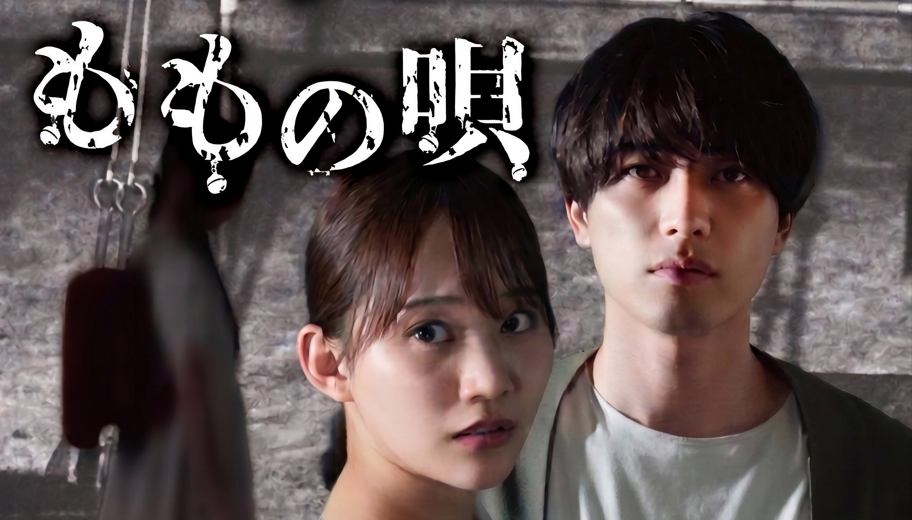

Momo no Uta (2025)
ももの唄

"Momo no Uta" lagu yang populer di kalangan siswa sekolah dasar dan menengah pertama di Prefektur Kanagawa pada awal era Heisei. Konon, menyanyikan lagu ini dapat membantu menemukan sesuatu yang hilang, dan dalam beberapa tahun terakhir lagu ini kembali populer di kalangan anak muda. Namun, mereka yang menyanyikan lagu ini meninggal secara misterius satu demi satu. Saat menyelidiki serangkaian kematian misterius tersebut, Masumura Kenichi, seorang penulis untuk majalah okultisme "Nessie," menemukan kebenaran menyedihkan yang tersembunyi di dalam lagu tersebut.